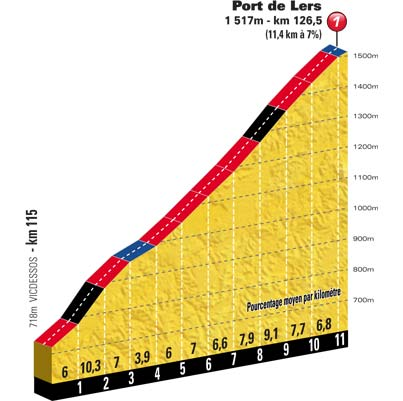
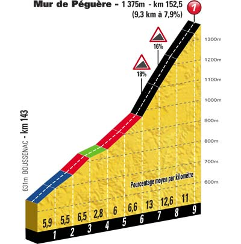

Classement
Parcours
Profil
Côtes
Dernier Km
Km 30.0 - Col du Portel (601 m) - 5.3 km de montée à 6.3 % - Catégorie 2
Km 126.5 - Port de Lers (1 517 m) - 11.4 km de montée à 7 % - Catégorie 1
Km 152.5 - Mur de Péguère (1 375 m) - 9.3 km de montée à 7.9 % - Catégorie 1
 
Etape précédente
Retour
Etape suivante